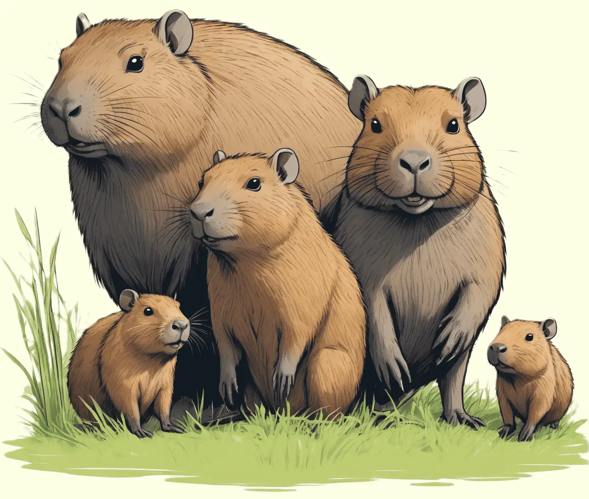

Das Capybara, ein geselliges Nagetier, begeistert mit seinem dichten Fell und seinem freundlichen Wesen.
Entdecke die liebenswerte Welt dieser Tiere und erfahre, wie sie in den Feuchtgebieten Südamerikas leben.

Größte Nagetiere der Welt
Capybaras, auch Wasserschweine genannt, sind die größten lebenden Nagetiere der Welt und stammen aus den südamerikanischen Regenwäldern. Mit ihrem massigen Körperbau, kurzem Fell und einem charakteristischen runden Kopf sind sie leicht zu identifizieren. Die Capybaras haben kurze Beine und schwimmen hervorragend, was sie zu ausgezeichneten Bewohnern von Gewässern wie Flüssen, Seen und Sümpfen macht. Ihr Fell ist meist bräunlich und grob, wobei es im Wasser schnell trocknet. Capybaras haben angepasste Backenzähne, die ständig nachwachsen, und sie ernähren sich hauptsächlich von Gras, Wasserpflanzen und Rinde. Diese Nagetiere sind gesellig und leben oft in Gruppen, wobei sie eine soziale Hierarchie entwickeln.
Obwohl sie aufgrund ihres Aussehens oft mit großen Meerschweinchen verwechselt werden, sind Capybaras mit den Nagetieren der Familie der Meerschweinchen nicht näher verwandt. Sie sind eher mit Agutis und Wasserschweinen verwandt. Capybaras sind in vielen Teilen Südamerikas anzutreffen und haben sich an verschiedene Lebensräume angepasst, von Grasländern bis hin zu dichten Wäldern. Ihre Fähigkeit zu schwimmen und ihre friedliche Natur machen sie zu einzigartigen und faszinierenden Mitgliedern der Tierwelt.
Sozial lebende Nager
Capybaras sind soziale Tiere, die oft in Gruppen von bis zu 30 Individuen leben. Diese Gruppen werden von einem dominanten Männchen geführt, das dafür sorgt, dass die Hierarchie eingehalten wird. Diese Nagetiere kommunizieren miteinander durch verschiedene Laute, wie zum Beispiel ein tiefes Knurren, um Bedrohungen zu signalisieren oder um Kontakt mit ihren Artgenossen herzustellen. Aufgrund ihrer friedlichen Natur und Anpassungsfähigkeit werden Capybaras gelegentlich als Haustiere gehalten, vor allem in Ländern wie Japan und einigen Teilen Nordamerikas. Allerdings erfordert die Pflege von Capybaras spezielles Wissen über ihre Bedürfnisse und Verhaltensweisen, weshalb dies in vielen Ländern eingeschränkt ist.
In einigen Kulturen werden Capybaras auch als Nahrungsquelle genutzt, obwohl ihr Fleisch in anderen Regionen als ungenießbar gilt. Trotz ihrer erstaunlichen Größe und ihres geselligen Verhaltens sind Capybaras in einigen Teilen Südamerikas aufgrund von Lebensraumverlust und Jagd gefährdet. Der Schutz dieser faszinierenden Nagetiere erfordert daher den Erhalt ihrer Lebensräume und nachhaltige Maßnahmen, um die Mensch-Capybara-Konflikte zu minimieren.